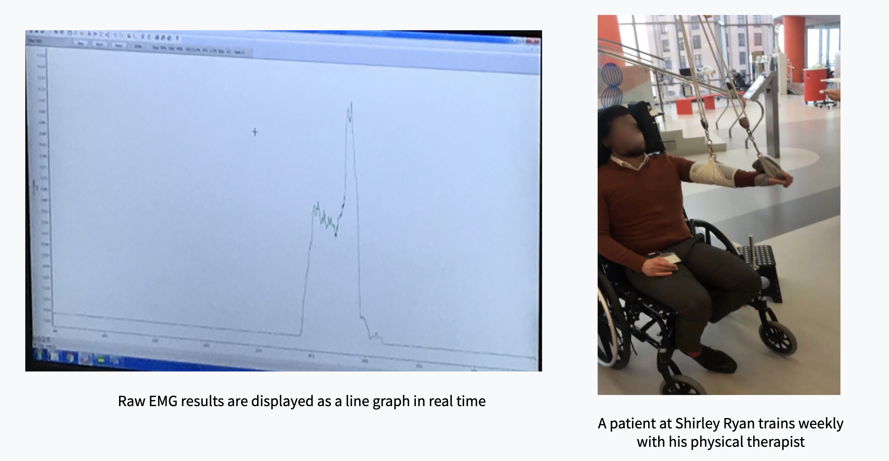
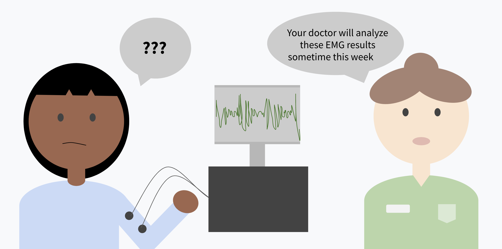
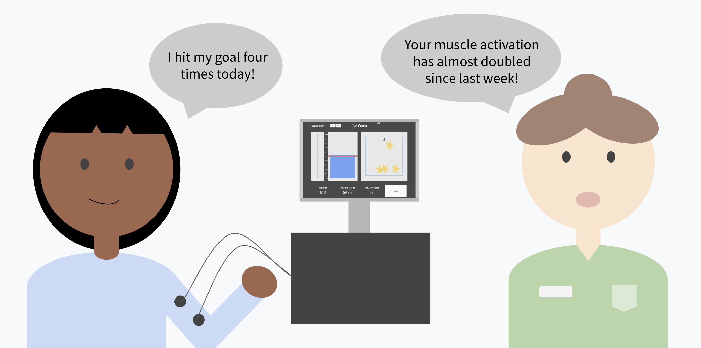
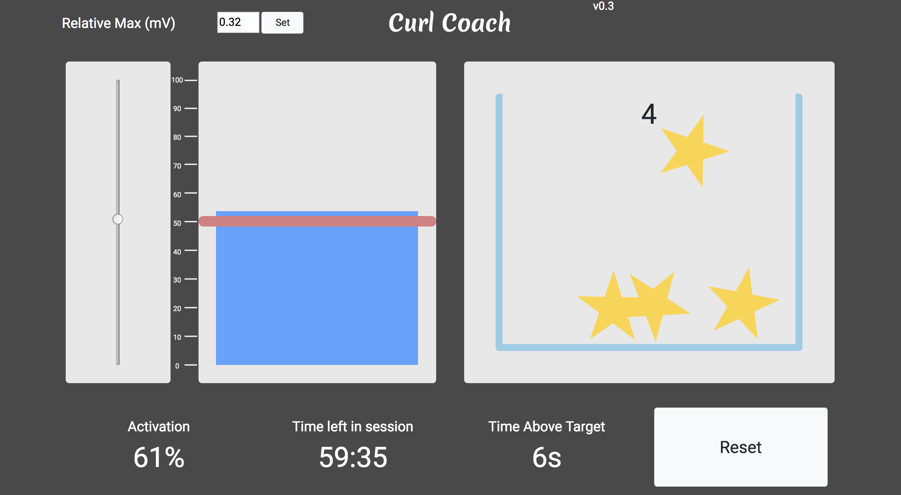

How can we help physical therapists track their patients' success?
Physical therapists at the Shirley Ryan AbilityLab expressed difficulty parsing the large
amounts of raw data collected during therapy sessions when using EMG sensors. EMG sensors track a patient's muscle activation. This data is especailly useful for physical therapists and stroke survivors who are learning to regain control of their muscles.

The Problem
Physical therapists wanted a clear visualization of EMG sensor data to track their patients' muscle progress in real time and easily convey that information to their patients without asking a doctor. However, a number of problems arose because raw EMG data is very difficult to read.
- Physical therapists have to send the data to doctors to be analyzed. This can take days.
- Patients have no clear indidcation of their progress within the therapy session.
- The raw EMG data and lack of real time feedback is demotivating for patients and PTs.

Design Process
My team visited Shirley Ryan AbilityLab to interview patients, physical therapists, doctors, and observe a handful of physical therapy sessions. We then began the first round of brainstorming: an idea dump.

After more calls and interviews with the PTs at Shirley Ryan, team discussion, prototyping and sketching, we built a low fidelity prototype to test with users at Shirley Ryan.

"Patients get frustrated—they need to be distracted by something"
-Expert interview with PT, Jan 18
Our prototype was effective, but provided no visuals, a key component to keeping patients engaged and distracted from the difficulty of therapy session. So we started to think more about how we can make physical therapy engaging. Could we gamify PT sessions?
We experimented with many forms of data visualization: a pulsing orange circle, water filling a fishtank, a man ascending a mountain, and more.

Mockups of motivational EMG interface
Our client and test users found the gamification component to our interface critical. It receieved a lot of positive feedback. We had to be careful about not making the interface too "fun" which might obscure important data from the view of a physical therapist who cannot spend more than a few second glancing at the computer screen.
Final Solution
The goal of this project was to assist physical therapists and patients in understanding real time data from physical therapy sessions which may increase efficiency and efficacy of therapy sessions. My team also hoped to decrease patient frustration due to the lack of real time progress results and increase the amount of EMG analysis that can be conducted by the physical therpaist during a PT session.

Curl Coach is interactive software that processess raw EMG signals into an attractive and comprehensive interface for use during physical therapy sessions. The interface includes a muscle activation meter to display the EMG signal value, a strength goal to be set by the therapist, a star collector that rewards the patient for surpassing the target, and a data analysis system offering the therapist real time statistics on the session.

Curl Coach interface for physical therapists and patients
Bar Indicator: The blue bar plot rises and falls with the patient's muscle activation—directly related to the strength of the EMG signal. The simplicity of this graph makes it easy for therapists to quickly gauge the patient's muscle activation level without turning away from the patient for long.
Target Line: The red target line is a slider bar which can be adjusted by the physical therapist throughout the PT session. The target allows the patient and physcial therapist set a goal and observe the patient's progress. Muscle activation that exceeds this goal is saved to track how many times the patient reached his/her goal and for long long did the patient sustain muscle activation above the target.
Star Counter: The bucket of stars serves as the main aspect of motivation for the patient. Stars are collected with each rep that exceeds the target line.